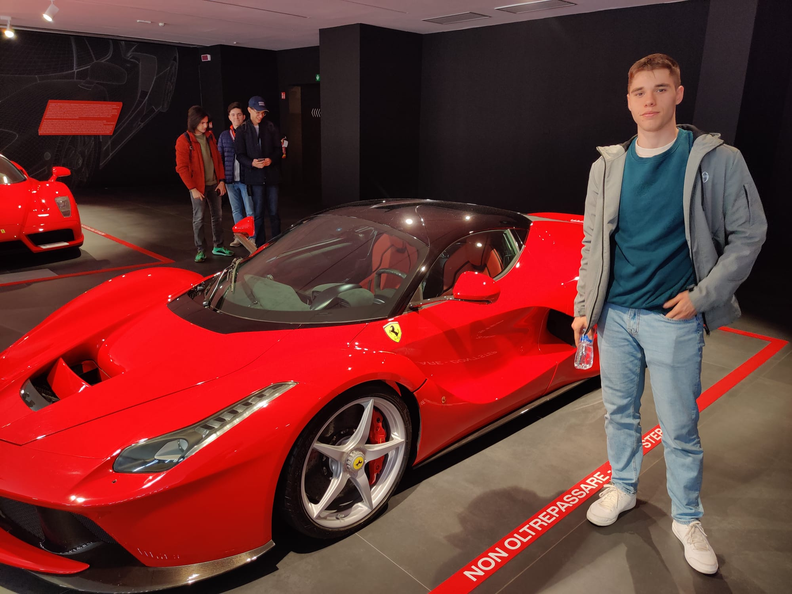

Bodrogean Andrei-Darius
(Also known as Bodro or HKDominator)

SUMMARY
I am an upcoming full-stack developer, software engineer and game
developer, always ready to learn and invest into myself in order to grow
and exceed in all my work.
Education
-
High school valedictorian with a perfect grade of 10 at the most
prestigious high school in my county
-
First year student at the University of Mathematics and Computer Science
Babes-Bolyai, computer science specialization in english
Work Experience
- Freelancer, self-development projects
- Fiverr freelancer with a mathematic and excel gig (2022-2024)
Skills
- Soft Skills
- Team-Working ⭐⭐⭐⭐ 4 / 5
- Motivation ⭐⭐⭐⭐⭐ 5 / 5
- Dedication ⭐⭐⭐⭐⭐ 5 / 5
- Problem solving ⭐⭐⭐⭐ 4 / 5
- Persistance ⭐⭐⭐⭐⭐ 5 / 5
- Inovative Thinking ⭐⭐⭐⭐ 4 / 5
- Hard working ⭐⭐⭐⭐⭐ 5 / 5
- Communication ⭐⭐⭐⭐ 4 / 5
- Hard Skills
- C#
- C++
- Python
- Html
- CSS
- SQL
Awards and achievements
-
Second place at the national computer science competition, regional
phase 2024
-
Six times first place at the national Physics competition, regional
phase 2023, 2022, 2021, 2020, 2019, 2018 and bronze medalist at the
national phase in 2019
- Certified C++ and C# programmer
- Unihack participant 2023
-
C2 proficiency level at english with a Certificate in Advanced English
-
Sixth place at the national
NEXTLAB.TECH robotics
competition 2022
-
Second and third place at the national Mathematics competition, regional
phase 2022, 2021, 2020, 2019, 2018, 2017
-
Second place at the national computer science competition, regional
phase 2024
-
Fourth place at the interregional Mathematics competition "Traian
Lalescu" in 2018
Other